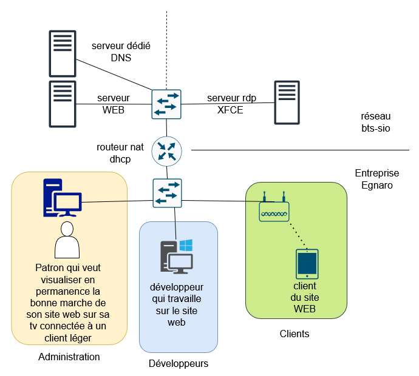
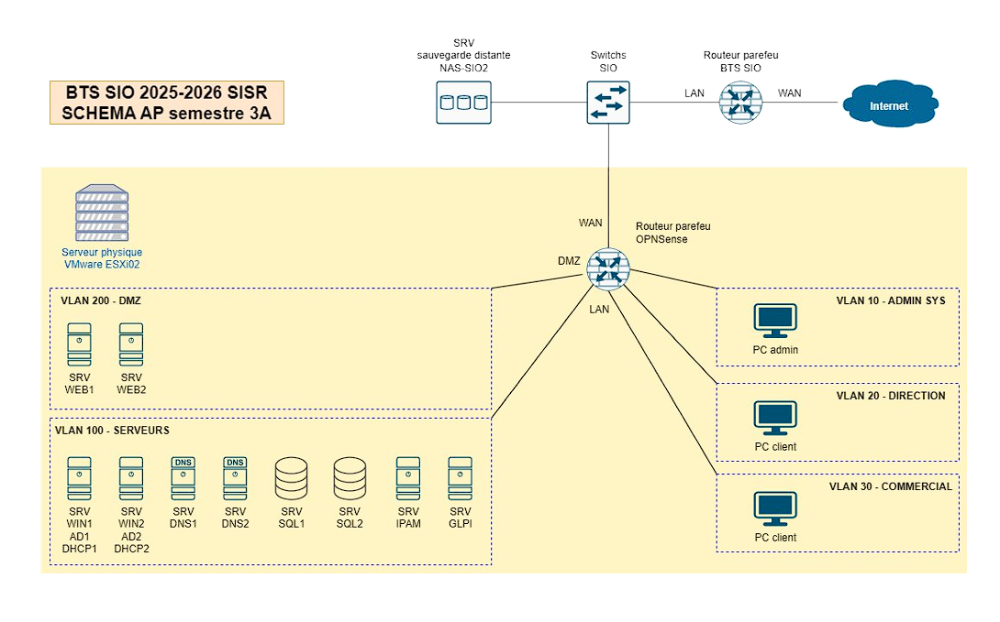
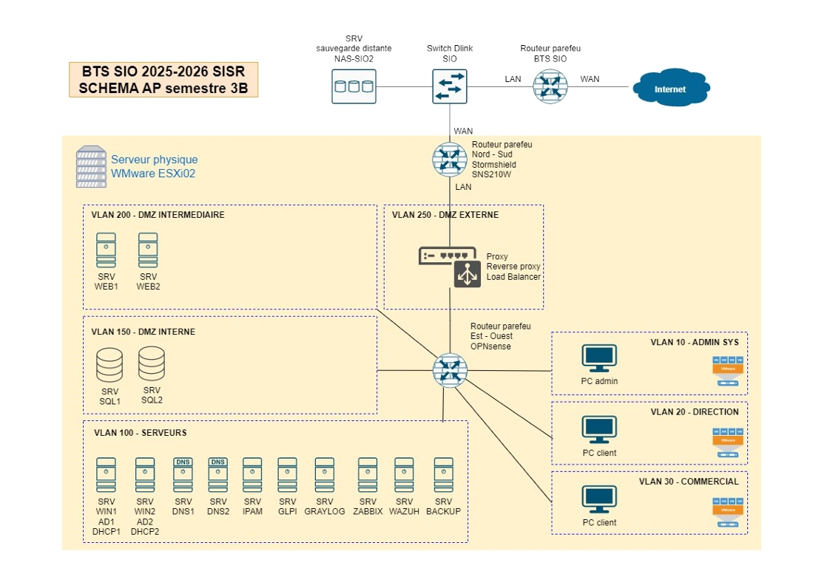

Mes Projets
AP Semestre 1 – Egnaro
Contexte : Réalisation d’une architecture réseau et système sécurisée pour l’entreprise fictive Egnaro.
Objectifs : Hébergement local d’un site web vitrine, gestion des accès, segmentation VLAN, sécurité des OS, automatisation et supervision.
Points clés
- Conception réseau (plan d’adressage, VLAN, routage, sécurité)
- Déploiement et sécurisation des OS (Linux, Windows)
- Installation et paramétrage du serveur web et des accès clients
- Automatisation de la supervision (script de circulation web)
- Documentation complète (schémas, comparatifs, justifications)
Schéma du projet

AP Semestre 2 – Geltram
Contexte : Mise en place d’une infrastructure informatique moderne et sécurisée pour l’entreprise Geltram.
Objectifs : Segmentation réseau, gestion centralisée des droits, sécurité, sauvegardes, services réseau et documentation.
Points clés
- Création de VLANs (Administrateurs, Commerciaux, Production, etc.)
- Active Directory, gestion des groupes et des droits
- Déploiement de services : helpdesk, DNS, serveur web, wiki
- Sécurité : filtrage, ACL, honeypot, sonde Snort
- Sauvegardes, supervision, documentation détaillée
Schéma du projet

Stage 1 - OpenNebula
Contexte : Projet pédagogique utilisant OpenNebula comme cloud privé pour déployer des VMs d'attaque (Kali) et cibles vulnérables (Metasploitable, DVWA). Les VMs sont "jetables" pour éviter les persistances après exploitation, avec isolation via VLANs et routeurs virtuels.
Objectifs : Déployer en un clic des groupes de VMs (attaquants + cibles + routeur) via OneFlow. Réinitialiser automatiquement les VMs à l'état initial post-TP, même si modifiées. Gérer un réseau complexe avec DHCP, NAT et isolation pour une robustesse pédagogique.
Points clés
- Images non persistantes : Retour à l'état initial après suppression, idéales pour VMs jetables
- Snapshots et revert : Permettent de revenir manuellement ou via scripts à un état propre
- OneFlow : Orchestre services multi-VM avec dépendances et élasticité.
- Réseau : Virtual Routers pour DHCP/NAT, contextualisation à configurer avec précaution pour ISO brutes
Schéma du projet

AP Semestre 3A - GSB
Contexte : GSB héberge initialement l'application sur un serveur Linux interne, mais sa criticité exige une disponibilité élevée et une publication en DMZ. La base de données reste en LAN, la partie applicative en DMZ avec tolérance de panne sur deux fronts, authentification via BDD.
Objectifs : Déployer un serveur web HTTPS/SSL en DMZ connecté à une BDD administrable. Répliquer AD, DHCP, DNS pour redondance. Tester la résilience aux attaques externes via OPNsense et IPAM pour adressage. Mettre en place sauvegardes NAS et procédures documentées.
Points clés
- Architecture : DMZ pour web, LAN pour BDD/clients, WAN simulé ; routage via OPNsense
- Services répliqués : AD, DHCP, DNS, WEB, SQL pour tolérance panne
- Sécurité/Doc : Test attaque externe, configs commentées, démo, Wiki install, schémas permanents
- Contraintes : Diagramme Gantt/ASANA, présentation IPAM, fichiers configs remis
Schéma du projet

AP Semestre 3B - GSB
Contexte : Suite au projet précédent, GSB demande un réagencement sécurisé avec multiples DMZ et double pare-feu. L'infrastructure passe en haute disponibilité avec supervision, logs centralisés et protection active contre les menaces.
Objectifs : Ajouter répartition de charge (load balancer) sur cluster web et scripts PowerShell pour déploiement/utilisateurs AD. Centraliser logs (serveur + SIEM) et superviser via outil dédié (Zabbix). Déployer IPS pour blocage trafic malveillant et maintenir DNS sur serveurs AD répliqués
Points clés
- Sécurité renforcée : Double pare-feu, plusieurs DMZ, défense en profondeur, IPS avec alertes
- Automatisation : Scripts PowerShell pour install/config Windows et ajout users via CSV
- Monitoring : Serveur logs + SIEM (Graylog/Wazuh), supervision (Zabbix), IPAM à jour
- Contraintes : Gantt/Trello, justification choix (coût/sécurité), schémas permanents, configs
Schéma du projet
